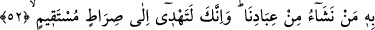
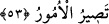

BÜTÜN İŞLER SONUNDA
ALLAH’A DÖNER
49. Göklerin ve yerin mülkü Allah’ındır. Dilediğini yaratır; dilediğine kız
çocukları, dilediğine de erkek çocukları bahşeder.
50. Yahut onları, hem erkek hem de kız çocukları olmak üzere çift verir.
Dilediğini de kısır kılar. O, her şeyi bilendir, her şeye gücü yetendir.
51. Allah bir insanla ancak vahiy yoluyla veya perde arkasından konuşur, yahut
bir elçi gönderip izniyle ona dilediğini vahyeder. O yücedir, hakîmdir.
52. İşte böylece sana da emrimizle Kur’an’ı vahyettik. Sen, kitap nedir, îman
nedir bilmezdin. Fakat biz onu kullarımızdan dilediğimizi kendisiyle doğru yola
eriştirdiğimiz bir nur kıldık. Şüphesiz ki sen doğru bir yolu göstermektesin.
53. (O yol) göklerin ve yerin sahibi olan Allah’ın yoludur. Dikkat edin, bütün işler
sonunda Allah’a döner.
“Göklerin ve yerin,” bütün âlemlerin “mülkü Allah’ındır.” Göklerin ve yerin
padişahı (sâhibi, sultanı) Allah’tır. O, “dilediğini” insanların bildikleri ve bilmedikleri
şeyleri dilediği sûrette “yaratır; dilediğine kız çocukları, dilediğine de erkek
çocukları bahşeder.”
Bütün âlemlerin mülkü Allah’a âiddir. Allah’tan başka hiçbir kimsenin bu âlemlere
mâlik olmaya gücü yetmez. Bu âlemde sevk u idâre ve her türlü tasarruf yalnız Allah’a
âiddir. Nimet ve musîbet taksimini ehline göre O yapar. Kullara düşen nimete
şükretmek, belâ ve musîbetlere sabretmek, ezelî ahkâma rızâ ve teslimiyet göstermektir.